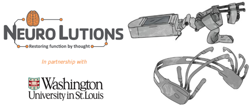

Clinical Trial
Thought Based Hand Rehabilitation
Hand weakness happens a lot after a stroke. Sometimes typical rehabilitation therapy does not improve hand strength and movement after a stroke.
Washington University and Neurolutions, Inc. made a robotic rehabilitation tool for stroke patients. The tool has a robotic glove that you wear on your hand and a headset that you wear on your head. The headset picks up your thoughts and sends them to the robotic glove.
The robotic glove will open when you think "open"
The robotic glove will close when you think "close"
Researchers think that connecting thought with real hand movement may help hand strength and movement. This study will help decide if this tool helps with hand strength and movement after stroke.
Who can participate in this research study?
If you have or have had:
- A stroke 6 months ago or longer
- Hand weakness
- Some ability to move your arm
- You do NOT need to be able to move your hand
What do you need to do for this study?
- You will come in for two screening visits. We will test your hand movement. We will do an EEG and show you how to use the robotic glove. If the researcher thinks you will be able to use the robotic glove, you will be invited to continue the study.
- If you continue with the study, treatment lasts for 12 weeks. You will do exercises every day at home for at least an hour with the glove.
- You will come for a visit every other week to track your progress.
- After the treatment, you will come in for one last visit.
What are the benefits of this study?
- You will get an additional 12 weeks of rehabilitation therapy.
- You will use a new rehabilitation tool.
- You may have better hand movement after this treatment. The researchers do not know how much your hand movement will improve with this treatment. Some people may not have any improvement.
- You will be paid for your time after study visits.
- Transportation can be provided at no additional cost.
How do I enroll?
Contact our occupational therapist, Lauren Souders to find out if you are eligible to participate.
Contact
If you or someone you know may benefit from this research study, or if you have any questions about the study, please contact:
Lauren Souders, MOT, OTR/L
Clinical Specialist
Occupational TherapistPhone: 314.266.8015
Email: soudersl@neuro.wustl.edu
Kelly Baranyai, MOT, OTR/L
Clinical Specialist
Occupational TherapistPhone: 314.266.8015
Email: baranyaik@neuro.wustl.edu
Participating in this research study is optional. If you choose not to participate, your medical care will not be affected in any way. Participating in a research study does not take the place of visits to your own doctor and should not be relied on to diagnose or treat medical problems.
Principal Investigator: Thy Huskey, MD
Office Phone: 314.362.4503
Email: huskeyt@neuro.wustl.edu